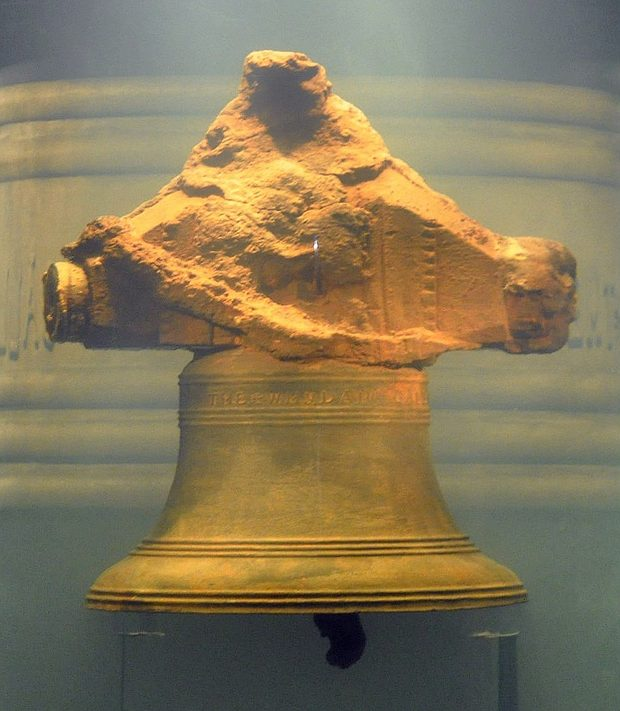

Arrival: What Is This?
This photo is already on the screen when you walk in.

Say nothing yet. Grab a scratch sheet. Write three things you notice about it. Then write two questions it gives you. No talking. No wrong answers, just eyes and a pencil.
Heads up: there is no folder today. Folders start Day 2. Everything you write today stays on loose paper, and your teacher keeps it safe overnight.
Now grab a fresh sheet. Fold it long-ways, so it stands up like a little tent. On the front: your first name, big. Underneath: one thing you would bring on a five-week voyage, and why.
Welcome Aboard
For the next five weeks, you are not a class. You are a crew. Together you are going to investigate a real ship. She sank in a real storm in 1717. Your job is to figure out how to tell her story so people actually care.
Here is the whole spark, in about ninety seconds. That bell you just looked at came off the ocean floor in 1985. It is real. The ship is real. Everything about her can be proven. Over the next five weeks, you are going to find out exactly how that bell ended up on the bottom of the ocean. And who was standing near it when it happened. That is the whole unit in one sentence. Nobody is telling you the rest today.
Quick warm-up. Turn to your neighbor. Say your name, and one place in the world you would love to travel.
Five weeks. Three trips off this campus: a museum, kayaks, an island in Boston Harbor. You earn every one of them, together. Week 1, you learn to read a map like it is 1717. By August 6, you pick one person from this story. You tell it through their eyes, your way. A comic. A song. A map. A performance. Twelve ways to choose from, or invent your own. It ends live, at a public Showcase, in front of families and friends.
One more thing before we sit down. Grab your scratch sheet again. Two minutes: draw the route you took to get here today. Your bed, your door, the street, this building. Do not make it neat. Just draw what you remember.
Our Crew's Articles
Quick bit of history, and it matters. Real pirate crews wrote their own rules. They called them Articles. The captain did not hand them down. The crew wrote them together. Everyone signed.
This crew needs Articles too, starting today:
- We're a crew. Look out for each other. Disagree all you want. Never disrespect.
- Every voice logs in. No grades on this ship. Everyone talks, writes, and asks. A quiet crew is a sunk crew.
- Ask the weird question. If you are wondering it, someone else is too.
- Handle the hard history like a historian. Real people were enslaved on this ship. Real people died. We look straight at that. We do not look away. We do not make it a joke.
- Draw it if you can't word it. Stuck for words? Sketch it. Map it. Act it out.
Talk each one through as a crew. What does "look out for each other" actually look like in this room?
Remember this list. On Day 9, this crew writes its own Articles from scratch, votes them into force, and signs them in real red wax. Today is the promise. Day 9 is where it gets paid.
The Whole Voyage in Twelve Minutes
Phones down. This is the story of the ship you just saw a piece of, and every word of it is real.

She was built in London in 1715. They named her after Ouidah, a slave-trading port in West Africa. Her first voyage carried hundreds of enslaved Africans across the ocean. That is what she was built to do.
In early 1717, a pirate captain named Sam Bellamy chased her down over three days and took her. His crew had already robbed more than fifty ships. That crew was not all one thing. Some men had escaped slavery. Some were free sailors looking for a fairer deal than the navy offered. One was a boy named John King, somewhere between eight and eleven years old. He was so determined to become a pirate that he refused to leave. Even his own mother could not talk him into going home.
On the night of April 26, 1717, a storm drove the Whydah onto a sandbar off a beach on Cape Cod. She rolled in the surf. There were 146 people aboard. Two survived.
A mapmaker named Cyprian Southack came to salvage what he could. He found almost nothing. But he wrote the wreck's location on his chart, in his own hand.
That chart sat in an archive for 267 years. In 1984, a treasure hunter named Barry Clifford read it and found the ship exactly where Southack said it would be. The next year, divers pulled up that bell. THE WHYDAH GALLY, 1716.
A slave ship. Taken by pirates. Lost in a storm. Found again by a 267-year-old map. That is the Whydah. That is what this crew investigates for the next five weeks.
The Driving Question
Here is the one question this crew chases for five weeks. Read it slowly.
"Why would a person choose piracy in 1717 — and how would they want you to tell their story?"
This goes up on the classroom wall right now. It stays there for all five weeks. Sit with it. Do not answer it today. Nobody does. You answer it a little more each day, until Showcase.
The Logbook: a Live Tour
Everything from the story you just heard, and a lot more, lives on one website. That website is this crew's logbook, all summer long. Your teacher drives it live on the screen. Here it is again, stop by stop. Shout out anything that catches your eye.
Open the logbook →- The Timeline: the whole voyage, year by year. Anything surprise you?
- The People: everyone whose story you could tell. Find someone close to your own age.
- The Artifacts: the bell, the coins, a shoe that helped identify a young pirate.
- The Maps: a 1719 map that calls half the world "Parts Unknown," and the real chart Southack drew by hand.
- The Final Project: twelve ways to tell a story. By Week 5, you pick one, or invent your own.
The Big Choices
By the end of five weeks, you make two picks. First, a person: whose eyes do you want to tell this story through? The captain? The boy who begged to join? Someone who was enslaved? The mapmaker? A modern diver? Second, a way to tell it: a map, a comic, a performance, a song, twelve ways in all, or pitch your own.
Flip your name tent over. Jot your top two people and your top two ways you might tell a story. You are not committing to anything. Just notice what pulls you. We make it official tomorrow.
Quick-Write: Starting Over at Sea
Fresh sheet of paper. Here is the prompt:
"If you had to leave everything behind and start over at sea, what would your world have to look like?"
Write it. Draw it instead if you would rather. There are no wrong answers.
Five minutes, silent writing. Three minutes, pair-share with your neighbor. A few more as a whole crew, for anyone who wants to read theirs out loud.
Closing Circle
One ring, whole crew. Pass the talking piece. When it reaches you: one word for how you feel about this voyage starting. No explaining, just the word.
Second round, if there is time: name one person from today's story you want to know more about.
No folder to file this in yet, remember. Your teacher collects the loose pages tonight. Tomorrow, you get a real place to keep them.
Three words stay on the board all week: voyage. perspective. pirate. You came in as a class. You are leaving as a crew. See you tomorrow.
Academic Vocab
driving question = the big question a whole unit chases, not answered in one day · perspective = whose eyes a story gets told through · voyage = a journey by sea, usually a long one · primary source = evidence made by someone who was actually there, like a bell, a chart, or a trial record